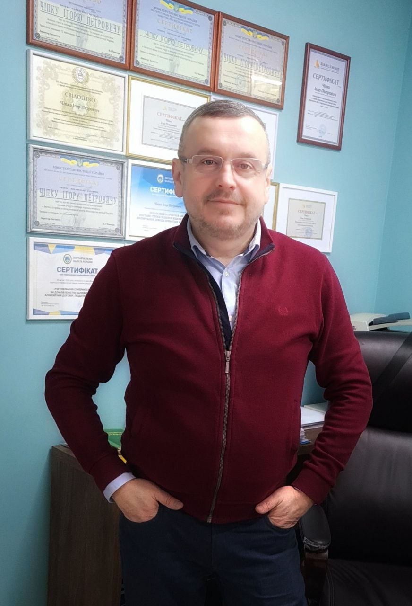

- Посвідчення правочинів (ДОГОВОРІВ купівлі-продажу, дарування, міни (обміни), іпотечних договорів, ЗАПОВІТІВ, ДОВІРЕНОСТЕЙ тощо)
- Заведення спадкової справи і видача СВІДОЦТВА про право на спадщину
- Засвідчення справжності підпису на документах
- Засвідчення ВІРНОСТІ ПЕРЕКЛАДУ документів
- Видача СВІДОЦТВА ПРО ПРАВО ВЛАСНОСТІ на частку в спільному майні подружжя
- НАКЛАДЕННЯ та ЗНЯТТЯ ЗАБОРОНИ щодо відчуження нерухомого майна
- Посвідчення факту, що фізична особа є живою або перебуває у певному місці
- Засвідчення ВІРНОСТІ КОПІЇ документів
- інші нотаріальні дії, згідно з Законом України «Про нотаріат»
Приватний Нотаріус
Чіпко Ігор Петрович
Безкоштовна попередня онлайн консультація

Свідоцтво про право на зайняття нотаріальною діяльністю № 9155 від 25 листопада 2013 року видане Міністерством Юстиції України.
Реєстраційне посвідчення про реєстрацію приватної нотаріальної діяльності № 213 від 15 травня 2020 року видане Південно-Західним міжрегіональним управлінням Міністерства юстиції (м. Івано-Франківськ).
Нотаріальні Дії